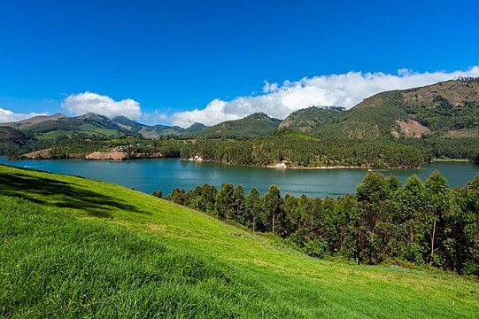

Peace is the best journey
Happiness is the best Destination
| Destination Name | Country | Best Time to Visit |
|---|---|---|
| Chandra Taal | India | July to September |
| Kedarnath | India | May to June |
| Ooty | India | Between March and June |
| Goa | India | November to February |
| My Home | India | Whenever You want |